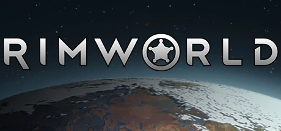
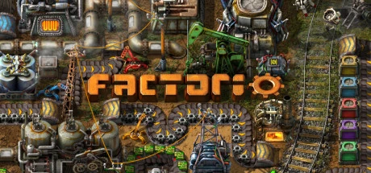
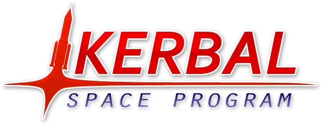
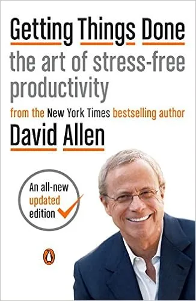

Misc
This page contains a list of other interesting aspects that I want to share in one way or another. If you read this page and we meet, any of these topics will be a good conversation starter that could last an entire evening.
Gaming
RimWorld

Building colonies and managing small pawns that constantly want to kill themselves while trying not to commit war-crimes. At the time of writing, this is my most played game on Steam and it is a fantastic game to play while watching some YouTube videos that only require half-attention.
Rocket League
Rocket League has been my Esport of choice both for watching and playing for many years.. I started playing it basically when I arrived on Steam and have been quite decent at it as well. For a variety of reasons I stopped playing a few years ago, but it is still a great amount of fun! For people who don’t know the game, it is exactly what you imagine if you combine Football and Cars. A predecessor made by the same team probably had a more descriptive name: Supersonic Acrobatic Rocket-Powered Battle-Cars.
Factorio

This is a real-time automation game where you have to constantly expand your factory to construct more and more elaborate production chains, all while defending everything from the ever-present bugs on the planet. It’s the perfect “Just 5 more minutes” game.
Kerbal Space Program

At the time of writing, my second most favorite game on Steam. It is basically “Orbital Mechanics, The Game” with a bit of “Babies first Tsiolkovsky Rocket Equation” thrown in for good measure. As per usual Randall Munroe probably described it the best. If you ask me, going RP-0 with Real Scale Solar system is the only way to live (and get very, very frustrated). Unfortunately, the second version of the game was not great and everything around it seems to be dead now.
Productivity

Although the book as aged quite badly, I can still recommend David Allen’s Getting Things Done book for everyone. Combining the ideas of this book with a modern TODO list app (I have been using Todoist for a while now after switching away from Omnifocus) really helps reducing stress levels in addition to increasing productivity. In addition to that, throw in a bit of Pomodoro magic and keep those new tasks coming.
Cool Tools
This is a list of various tools that I use more-or-less regularly that help with organization, productivity, and other tasks. None of them will be interesting for everyone, but a few might be useful for some. - Obsidian: A (mostly) Markdown file based knowledge database and notes-taking application. While it is possible to synchronize files using their paid service, the software is agnostic to the location of the files and supports Drobox, Google Drive, etc. Basically Notion, but local. - Quarto: A publishing system that converts Markdown and Python code into documents, presentations, or websites (such as this one). - VS Code: Probably the best code editor that is currently around, following in the footsteps of Notepad++ and Sublime Tetx
- Autohotkey: A powerful scripting language that execute complex actions through keyboard shortcuts. Almost anything that is doable in Windows can be automated through AHK.
- ImageMagick: Image conversion tool that supports almost any image format. Also has tools to edit the images in a procedural manner and is thus very batch-friendly.
- Microsoft PowerToys: Many features for more advanced users of Windows, such as a better clipboard handling, window management, etc. Would recommend that for anyone using Windows as a working environment.
- Milton: An open-source vector drawing problem that is great for quick drawings when trying to explain complex concepts.
- Pandoc: A document conversion tool that supports many file types, being able to generate Word documents from Markdown, PDFs from text files, etc etc.
- Parsec: A fantastic remote control application with ultra-low latency and multi-monitor support. More than once I didn’t actually realize that I was watching a video on the remote computer, it’s that great.
- RenderDoc: Anyone who does any OpenGL development needs this frame analyze that allows you to dissect any OpenGL frame and look at the rendering pipeline, textures, etc.
- Fork: In my view the best visual interface for Git.
- VLC: Who hasn’t heard of VLC
- OBS: An open-source screen recording software that I have been using for more than a decade at this point.
- SpeedCrunch: A great calculator with support for easy unit conversions, including interactively defining new units.
- vdo.ninja: A swiss army tool of video capturing and sharing. Using WebRTC, it is possible to capture anything and then either include it in OBS as a Browser or share a link with anyone to watch.
- yt-dlp: A great tool to download videos from many video sharing platforms.
- winget:
aptfor Windows. Makes it trivially easy to update software using the commandline or setup a new computer with a single line of code to install all software that you would want. - Todoist: A great light-weight Todo tracking app that has great API interfaces, too.
Podcasts
Listening to podcasts has been another staple of entertainment in my life for way over a decade at this point and it was especially useful in New York to pass the time on those pesky subway rides. Some of my recommendations of podcasts are:
- https://www.bbc.co.uk/programmes/p04b1g3c: A BBC podcast where the title gives everything away. They cover the 50 biggest inventions that shaped the world around us into what it is today.
- https://99percentinvisible.org: Roman Mars explaining the design aspects of things that are around us daily but to which we normally don’t pay any attention.
- Captains Speaking: Two professional 737 pilots discuss all things aviation. A great source of insider gossip and learning things you never knew you wanted to know.
- https://cppcast.com/: A for C++ developers. Discussion topics range from new and interesting libraries over language features all the way to C++ standard discussions.
- https://freakonomics.com/: One of the two economics-focussed podcasts on my list. It can be quite enlightening to listen how other people reason about the world and learn interesting facts in the process.
- https://www.nodumbquestions.fm: One more entry from the two-dudes-talking genre of podcasts. Destin Sandlin (Smarter Every Day) and Matt Whitman (10 Minute Bible Hour) discussing arbitrary topics.
- https://www.npr.org/sections/money: Similar to Freakonomics Radio, an economics-focussed podcast about explaining everyday events and items through the looking glass of economics.
- https://crooked.com/podcast-series/pod-save-america/: A podcast by four former aides to President Obama, Jon Favreau, Dan Pfeiffer, Jon Lovett, and Tommy Vietor, that discuss the current news and provide their side of the story.
- https://crooked.com/podcast-series/pod-save-the-world/: A spin-off podcast from Pod Save America about world politics.
- https://www.unmade.fm/: Another two-dudes-talking podcast by Tim Hein and Brady Haran generally about podcast ideas that never see the light of day.
- https://trumpconlaw.com: A second podcast by Roman Mars where he and Professor Elizabeth Joh discuss the current political news through the looking glass of Constitutional Law.
Previous
- https://www.relay.fm/cortex: CGP Grey and Myke Hurley’s two-dudes-talking podcast about productivity and their careers. Very useful to listen to other people talking about their self-employment careers.
- https://www.thejimquisition.com/podquisition: Jim Sterling’s (The Jimquisition), Laura K Dale’s, and Gavin Dunne’s (Miracle of Sound) podcast that is, mostly, about video games and to keep up to date on video game news.
- https://www.hellointernet.fm: Brady Haran and CGP Grey’s two-dudes-talking podcast. This is also about any arbitrary topic, but since both hosts are involved in making Youtube videos, that’s one reoccuring topic.
YouTube Channels
These are some of the Youtube channels that I’m following. Judging by my growing list of “Watch later” videos, I’m clearly subscribed to more channels that I have the time to watch.
- https://www.youtube.com/@3blue1brown: An educational channel about a lot of mathematical topics that are beautifully animated.
- https://www.youtube.com/@74gear: A channel about piloting-related topics from the point of view of a professional 747 pilot.
- https://www.youtube.com/@XboxAhoy: Deep dive videos into individual video games with an extended length and a sporatic upload schedule.
- https://www.youtube.com/@AlecSteele: A channel about blacksmithing and smithing-related experiments.
- https://www.youtube.com/@AllThingsSecured: A channel discussing the in’s and out’s of everyday IT security related questions.
- https://www.youtube.com/@BenEater: A channel going into great detail about close-to-the-metal hardware programming, including building a computer on a breadboard.
- https://www.youtube.com/@CGPGrey: An educational channel that occasionally releases shorter videos explaining all sorts of topics.
- https://www.youtube.com/@Computerphile: An educational channel that is focussed on the hardware and software side of computer science.
- https://www.youtube.com/@CppCon: On this channel, all recorded talks of the CppCon, an annual C++ focussed conference are released.
- https://www.youtube.com/@crashcourse: An educational channel with many sub-channels that cover everything from world history, sociology, to chemistry.
- https://www.youtube.com/@DeviantOllam: A variety of topics from self-defense, IT security, and travelling.
- https://www.youtube.com/@DoctorMike: A channel discussing medical research, their findings, and applicability to everyday life.
- https://www.youtube.com/@ElectroBOOM: An electronis channel, usually with some minor explosions being involved, while teaching about circuitry.
- https://www.youtube.com/@EverydayAstronaut: An eduational channel probably most known for its in-depth series on all kinds of rocket engines.
- https://www.youtube.com/@halfasinteresting: An educational channel with short-form videos discussing more obscure topics that you never knew you wanted to know about. A spin-off from Wendover Productions.
- https://www.youtube.com/@healthcaretriage: An educational channel about the news, grand ideas of healthcare, and also providing information about other medical topics.
- https://www.youtube.com/makeeverythingtv: Recreating civilization with one technology at a time.
- https://www.youtube.com/@Intelligence-Squared: On this channel the live Intelligence Squared debates are broadcast and cover a wide array of topics.
- https://www.youtube.com/@JacksonCrawford: An educational channel about Old Norse, the Eddas, and other long-dead languages and texts.
- https://www.youtube.com/@jetlagthegame: A game show where the contestents have to gain points while travelling and fulfilling missions. A spin-off from Wendover Productions.
- https://www.youtube.com/@jblow888: The developer of Braid and The Witness talking mostly about his project of developing a new programming language for his next game.
- https://www.youtube.com/@johnnyharris: A journalistic channel withe sporatic updates of long-form documentaries that are almost always interseting about a topic you never knew you wanted to know about.
- https://www.youtube.com/@kklein: An educational channel about the fun of linguistics.
- https://www.youtube.com/@kurzgesagt: An educational channel that covers a wide array of grand-theme topics in quite substantial detail and with high production value.
- https://www.youtube.com/@LegalEagle: An educational channel discussing current legal topics, the supreme count, and other interesting topics.
- https://www.youtube.com/@LowLevelTV: IT security discussing zero-day exploits, and going into moderate details about them
- https://www.youtube.com/@mattandtom: A shorter variant of the two-dudes-talking podcast but as a video, more often than not discussing events on Tom Scott’s main channel.
- https://www.youtube.com/@MentourPilot: An educational channel about aviation done by a commercial pilot. Most well known for its very detailed accident and incident analyses.
- https://www.youtube.com/@MentourNow: A news-y channel about aviation, covering events that are happening on a reoccuring basis. A spin-off from the Mentour Pilot channel.
- https://www.youtube.com/@MinutePhysics: A series of short, hand-drawn and animated stick figures that explain a large variety of physical phenomena.
- https://www.youtube.com/@miracleofsound: A music channel by Gavin Dunne where he releases all of his video game-based music soundtracks.
- https://www.youtube.com/@numberphile: One of the Brady Haran channels covering mathematical topics of all kind by almost exclusively talking to scientists in the field.
- https://www.youtube.com/@ObjectivityVideos: Another Brady Haran channel exploring the archives of the Royal Society and discussing its history and discoveries.
- https://www.youtube.com/@pbsspacetime: An educational channel that covers mostly grand-scale astrophyiscal topics.
- https://www.youtube.com/@periodicvideos: Yet another Brady Haran channel that is dealing with chemistry. Has at least one video on every element on the periodic table.
- https://www.youtube.com/@PracticalEngineeringChannel: An educational channel going into the details of engineering challenges, often strutural or electrical engineering.
- https://www.youtube.com/@premodernist_history: An educational channel discussing historical topics is great detail.
- https://www.youtube.com/@primitivetechnology9550: Just a dude in Australia that is trying out to recreate technology from scratch.
- https://www.youtube.com/@RealEngineering: An educational channel that explores different engineering focussed topics.
- https://www.youtube.com/@scottmanley: On this channel, Scott mostly plays and explains Kerbal Space Program. It is the best resource for every new player to learn about the basics of the game.
- https://www.youtube.com/@sixtysymbols: Another Brady Haran channel mostly focussed on all kinds of physics-oriented topics.
- https://www.youtube.com/@smartereveryday: An educational channel that covers a large variety of topics, primarily interested in surprising and unexpected experiences.
- https://www.youtube.com/@TechnologyConnections: An educational channel about all things technological, from music, video, computers, pinball machines, and anything else that is in the technological sphere.
- https://www.youtube.com/@The8BitGuy: A channel primarily focussed on programming an 8088 chip and what interesting programs and games can be made for it today.
- https://www.youtube.com/@theslowmoguys: A channel centered around slow motion cameras and showing the world at really slow speeds and present what cannot be seen.
- https://www.youtube.com/@TomScottGo: An educational channel that is these days primarily focussed on travelling to interesting locations and explaining the engineering or science performed there.
- https://www.youtube.com/@TheGreatWar: An educational channel that is covering the First World War by following the events that happen every week 100 years ago.
- https://www.youtube.com/@UsefulCharts: An educational channel covering a wide variety of topics, including language and history, exclusively with the help of charts.
- https://www.youtube.com/@Vice: A news channel that is covering current-ish events in the worlds in varying depth ranging from 2 minute to 2 hour pieces.
- https://www.youtube.com/@AmyShiraTeitel: Amy Shira Teitel’s channel that explains the history of early space exploration.
- https://www.youtube.com/@Vox: Another journalistic channel that covers a large varierty of current events.
- https://www.youtube.com/@Wendoverproductions: An educational channel that has documentary-stye videos about a variety of topics, often transporation or bricks.
Previous
A list of previous channels that I used follow more actively, but fell off for some reason or another. This list is mostly here to remind me to check in every once in a while to see what happened
- https://www.youtube.com/@GeographyNow: An educational channel where the host explains each country of the world alphabetically in bite-sized 10 minutes videos.
- https://www.youtube.com/@jackfrags:
- https://www.youtube.com/@JacksonGalaxy:
- https://www.youtube.com/@JimSterling: The channel of the Jimquisition, a weekly show that covers current events in the game industry and their shady practices.
- https://www.youtube.com/channel/UCsBd_jMRHu_GyDTBSs5MO9g: A channel mostly focussed on Rocket League tips and tricks. Recently also started covering Playerunknown’s Battleground.
- https://www.youtube.com/@NerdCubed: A funny and entertaining gaming channel that covers a large variety of games. Come for the games and stay for the laughter.
- https://www.youtube.com/@Pestily: A gaming channel that is predominantly known for playing Escape from Tarkov.
- https://www.youtube.com/@PrestonJacobstheSweetrobin: On this channel, Preston analyzes the Song of Ice and Fire book series and also provides and episode analysis of the Game of Thrones TV series.
- https://www.youtube.com/@SciShow: An educational channel that covers a very large array of topics and explains these in mostly 4-5 minute episodes.
- https://www.youtube.com/@SciShowPsych: A spin-off of the original SciShow that has focussed topiced on psychological phenomena.
- https://www.youtube.com/@scishowspace: Another spin-off of the original SciShow, this time focussed on astronomical and astrophyiscal topics.
- https://www.youtube.com/@cynicalbrit: A gaming channel that was a mix of industry commentary and reviews. Also hosted the weekly Co-optional podcast.
- https://www.youtube.com/@veritasium: Another educational channel that is covering a large variety of topics, but with a point of origin of educational content.
- https://www.youtube.com/@Vsauce: An educational channel whose videos move seemingly randomly through a large variety of topics, but always focussing on a fixed topic.
- https://www.youtube.com/@wtfmoses: A gaming channel that exclusively covers Playerunknown’s Battlegrounds, both with gaming footage as well as tutorial videos.
Book recommendations
- Superintelligence: A book by Nick Bostrom about the dangers of developing artificial intelligence and how it might endanger our future. This book changed my views on AI by 180°
- Song of Ice and Fire: It’s the original book series for Game of Thrones. After the disappointing sixth and seventh season, it’s refreshing to go back to the original
- The Dictator’s Handbook: A great book about understanding politics and scheming in organizations. The books subtitle “Why Bad Behavior Is Almost Always Good Politics” probably says it all.
- The Martian: A book by Andy Weir which has since been made into a successful move. Mark Watney is stranded on Mars after an accident and has to survive the harsh conditions on Mars.
- The Expanse Series: A book series by Daniel Abraham and Ty Franck about a realistic and gritty future where space travel through the solar system is possible. Made into a TV series, too.
- Failure is Not an Option: A memoir by Gene Kratz, the flight director responsible for the Mercury, Gemini, and Apollo era space craft at NASA.
- Star Wars: Darth Plagueis: A book about Darth Plagueis, the master of Darth Sidious and how he got to power.
- Mogworld: Written by Ben, Yahzee, Crowshaw, it is a book about what would happen if an NPC in an MMORPG would become sentient.
- Cockpit Confidential: Adopted from excepts of his blog, Patrick Smith, a pilot, explains common questions that people would have if they sat down with a pilot for a beer or two.
- A Man on The Moon: The book about the moon shot by Andrew Chaikin in which he describes the flights of the Apollo program. He sat down with all (at the time) living astronauts to get their stories.
- Ready Player One: A book about a dystopian future in which everyone lives in “The Oasis”, a fully immersive virtual reality environment and is looking for the ultimate golden ticket.
- Elon Musk: A biography about Elon Musk, covering his entire life until 2016, when this book was written.
- Steve Jobs: A biography about Steve Jobs, written by Walter Isaacson, and is probably the most complete retelling of his life.